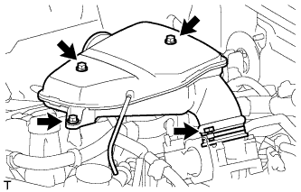
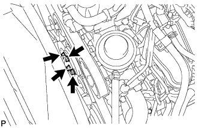
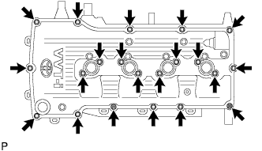
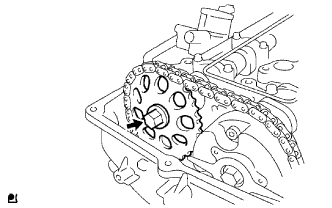
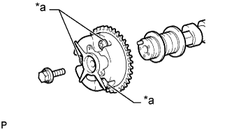
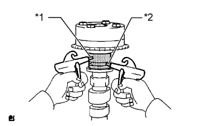

РАСПРЕДВАЛ > СНЯТИЕ |
| 1. ОТСОЕДИНИТЕ ПРОВОД ОТ ОТРИЦАТЕЛЬНОГО ВЫВОДА АККУМУЛЯТОРНОЙ БАТАРЕИ |
| 2. СНИМИТЕ НИЖНЮЮ НАКЛАДКУ ПЕРЕДНЕГО БАМПЕРА |
Освободите фиксатор, выверните 5 болтов и снимите нижнюю облицовку переднего бампера.
| 3. СНИМИТЕ ЗАЩИТУ КАРТЕРА ДВИГАТЕЛЯ № 1 В СБОРЕ |
 |
Выверните 4 болта.
Отсоедините защиту картера двигателя от кузова автомобиля, как показано на рисунке.
| 4. СНИМИТЕ ВЕРХНЕЕ УПЛОТНЕНИЕ КРОНШТЕЙНА РАДИАТОРА |
Освободите 13 фиксаторов и снимите верхнее уплотнение кронштейна радиатора.
| 5. СЛЕЙТЕ МОТОРНОЕ МАСЛО |
Снимите крышку маслоналивной горловины.
Снимите пробку сливного отверстия масляного поддона и прокладку, и слейте масло в емкость.
| 6. СНИМИТЕ КРЫШКУ ВОЗДУШНОГО ФИЛЬТРА В СБОРЕ |
 |
Открепите 3 зажима и отсоедините разъем датчика массового расхода воздуха.
Выверните болт, отсоедините зажим и снимите провод соединения с массой.
 |
Отцепите 4 зажима.
Ослабьте зажим шланга и снимите крышку воздушного фильтра.
| 7. СНИМИТЕ ПАТРУБОК ПОДАЧИ ВОЗДУХА |
 |
Отсоедините шланг вентиляции картера № 2.
Освободите зажим жгута проводов.
 |
Отсоедините вакуумный шланг.
|  |
Ослабьте хомут шланга.
Выверните 3 болта и снимите соединитель впуска воздуха.
| 8. СНИМИТЕ РАСШИРИТЕЛЬНЫЙ БАЧОК РАДИАТОРА |
 |
Отсоедините шланг бачка от радиатора.
Выверните 3 болта и снимите расширительный бачок радиатора.
| 9. СНИМИТЕ КОЖУХ ВЕНТИЛЯТОРА |
 |
Отсоедините захват, чтобы разомкнуть зажим гибкого шланга.
|  |
Ослабьте 4 гайки, крепящие вентилятор вискомуфты.
Снимите поликлиновой ремень вентилятора и генератора (Нажмите здесь).
 |
Выверните 2 болта, крепящие кожух вентилятора.
Отверните 4 гайки вентилятора вискомуфты, а затем снимите кожух вместе с вентилятором вискомуфты.
| 10. СНИМИТЕ КАТУШКУ ЗАЖИГАНИЯ В СБОРЕ |
 |
Отсоедините разъемы 4 катушек зажигания.
 |
Выверните 4 болта и снимите 4 катушки зажигания.
| 11. СНИМИТЕ ДАТЧИК ПОЛОЖЕНИЯ РАСПРЕДВАЛА |
 |
Отсоедините разъем датчика положения распредвала.
Выверните болт и снимите датчик положения распредвала.
| 12. СНИМИТЕ КРЫШКУ ГОЛОВКИ БЛОКА ЦИЛИНДРОВ В СБОРЕ |
|  |
Выверните 19 болтов, отверните 2 гайки и снимите крышку головки блока цилиндров и 2 прокладки.
| 13. СНИМИТЕ НАПРАВЛЯЮЩУЮ ЦЕПНОГО ПРИВОДА ГАЗОРАСПРЕДЕЛИТЕЛЬНОГО МЕХАНИЗМА |
 |
Выверните 2 болта и снимите направляющую цепного привода с кольцевым уплотнением.
| 14. СНИМИТЕ ЗВЕЗДОЧКУ РАСПРЕДВАЛА |
Проверните шкив коленчатого вала и совместите метку на нем с синхронизирующей меткой "0" на крышке цепного привода газораспределительного механизма.
Убедитесь, что установочные метки на зубчатом колесе и звездочке распредвала совмещены с установочными метками на крышке подшипника № 1, как показано на рисунке.
| *1 | Установочная метка |
| *2 | Канавка |
Нанесите краской метки на цепь привода газораспределительного механизма, зубчатое колесо и звездочку распредвала.
| *1 | Метка, нанесенная краской |
| *2 | Установочная метка |
Удерживая распредвал гаечным ключом, ослабьте болт звездочки.
| *a | Удерживайте |
| *b | Ослабьте |
 |
С помощью торцевого шестигранного ключа на 10 мм снимите резьбовую заглушку.
С помощью отвертки отожмите стопорную пластину натяжителя через технологическое отверстие натяжителя цепи. Отведите стопорную пластину вверх, чтобы освободить фиксатор. Удерживайте пластину в этом положении, как показано на рисунке.
| *1 | Стопорная пластина |
Освободив замок стопорной пластины, слегка поверните распредвал по часовой стрелке и оставьте его в этом положении.
| *1 | Плунжер |
Извлеките отвертку из технологического отверстия натяжителя цепи. Переместите стопорную пластину в положение, показанное на рисунке. Затем вставьте торцевой гаечный ключ в отверстие.
| *1 | Шестигранный ключ |
|  |
Снимите звездочку распредвала с распредвала № 2.
| 15. СНИМИТЕ РАСПРЕДВАЛ |
 |
В несколько приемов равномерно ослабьте 21 болт крышек подшипников в последовательности, показанной на рисунке.
Снимите 9 крышек подшипников, маслоподводящую трубку, кольцевое уплотнение и распредвал № 2.
Снимите распредвал, удерживая цепь газораспределительного механизма.
Закрепите цепной привод газораспределительного механизма веревкой, как показано на рисунке.
| 16. СНИМИТЕ РЫЧАГ ПРИВОДА КЛАПАНА № 1 В СБОРЕ |
 |
Снимите 16 рычагов приводов клапанов с головки блока цилиндров.
| 17. СНИМИТЕ МЕХАНИЗМ РЕГУЛИРОВКИ ЗАЗОРА В ПРИВОДЕ КЛАПАНА В СБОРЕ |
 |
Снимите 16 механизмов регулировки зазора в приводе клапана с головки блока цилиндров.
| 18. СНИМИТЕ ЗУБЧАТОЕ КОЛЕСО РАСПРЕДВАЛА В СБОРЕ |
|  |
Выверните болт фланца и снимите зубчатое колесо распредвала.
| *a | Не снимайте |
| 19. ПРОВЕРЬТЕ МЕХАНИЗМ РЕГУЛИРОВКИ ЗАЗОРА В ПРИВОДЕ КЛАПАНА В СБОРЕ |
 |
Поместите механизм регулировки зазора в емкость, наполненную свежим моторным маслом.
| *1 | Конусная часть |
| *2 | Плунжер |
| *3 | Камера низкого давления |
| *4 | Запорный шарик |
| *5 | Камера высокого давления |
| *a | ПРАВИЛЬНО |
| *b | НЕПРАВИЛЬНО |
Вставьте наконечник SST в плунжер механизма регулировки зазора и отожмите вниз запорный шарик внутри плунжера.
Прижмите SST к механизму регулировки зазора так, чтобы переместить плунжер вверх-вниз 5-6 раз.
Проверьте ход плунжера и выпустите воздух.
После выпуска воздуха извлеките SST. Затем попробуйте быстро и с усилием нажать на плунжер пальцем.
| 20. ПРОВЕРЬТЕ ЗУБЧАТОЕ КОЛЕСО РАСПРЕДВАЛА В СБОРЕ |
 |
Проверьте замок зубчатого колеса распредвала.
Зажмите распредвал в тисках и убедитесь, что зубчатое колесо распредвала неподвижно.
| *1 | Канал запаздывания |
| *2 | Канал опережения |
| *a | Открыто |
| *b | Закрывание |
 | Кусок резины |
 | Виниловая лента |
Извлеките стопорный штифт.
Закройте 4 масляных канала на шейке распредвала виниловой лентой, как показано на рисунке.
Проколите ленту со стороны канала опережения, а затем – со стороны канала запаздывания с противоположной стороны проточки, как показано на рисунке.
|  |
Подайте сжатый воздух под давлением около 200 кПа (2,0 кгс/см2, 28 фунтов на кв. дюйм) в два канала, доступные через отверстия в ленте.
| *1 | Канал запаздывания |
| *2 | Канал опережения |
 |
Проверьте, чтобы зубчатое колесо распредвала вращалось в направлении угла опережения при снижении давления воздуха со стороны проточки запаздывания.
| *1 | Канал запаздывания |
| *2 | Канал опережения |
| *a | Уменьшение давления |
| *b | Поддержание давления |
Когда зубчатое колесо распредвала займет положение, соответствующее максимальному опережению, уменьшите давление воздуха в канале со стороны запаздывания, а затем в канал со стороны опережения.
Проверьте плавность вращения.
Несколько раз поверните зубчатое колесо распредвала в пределах диапазона поворота, не доводя его до положения максимального запаздывания. Убедитесь, что шестерня вращается плавно.
Проверьте, фиксируется ли муфта в положении наибольшего запаздывания.
Убедитесь, что зубчатое колесо распредвала оказывается зафиксированным в положении наибольшего запаздывания.